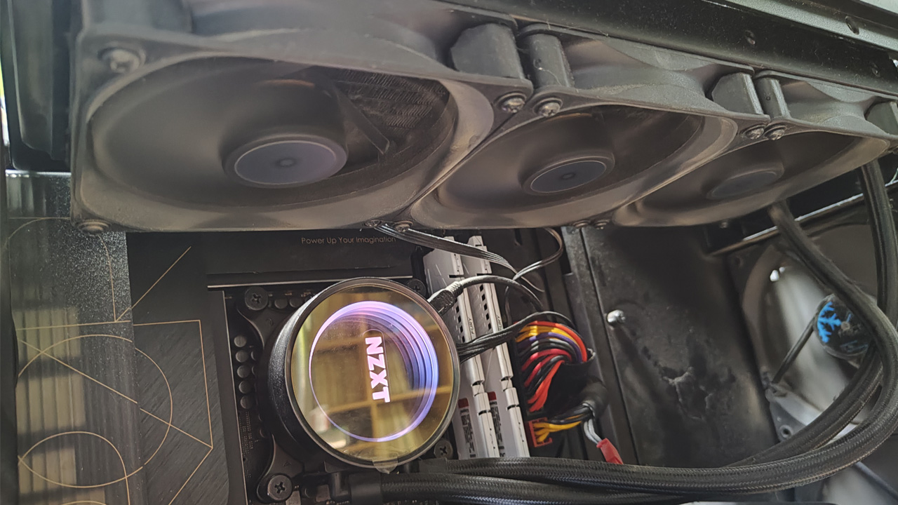
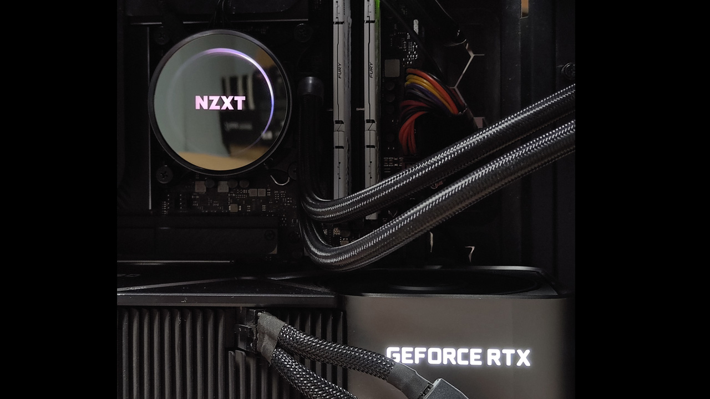
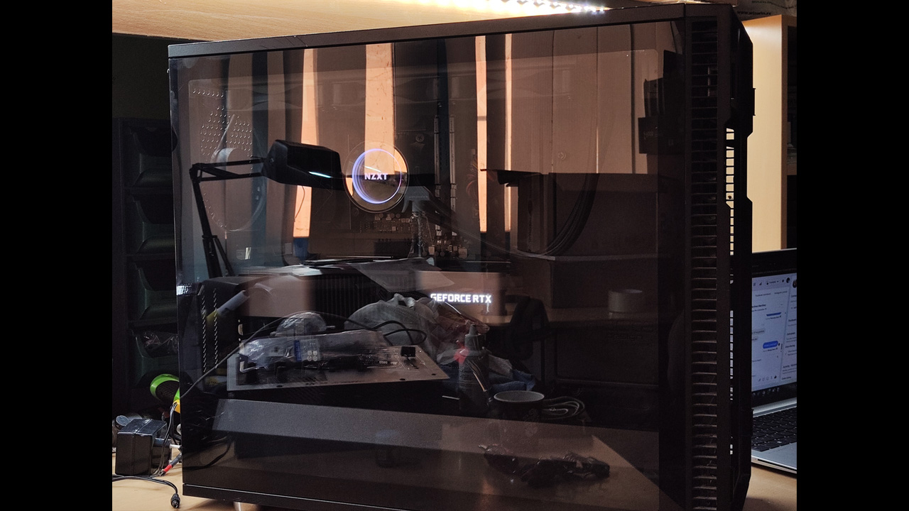
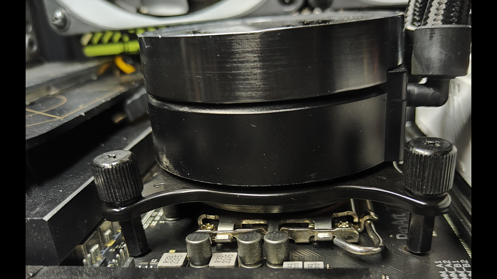
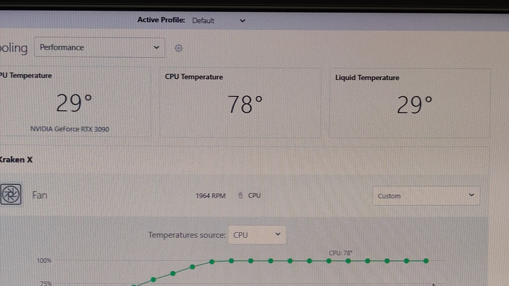
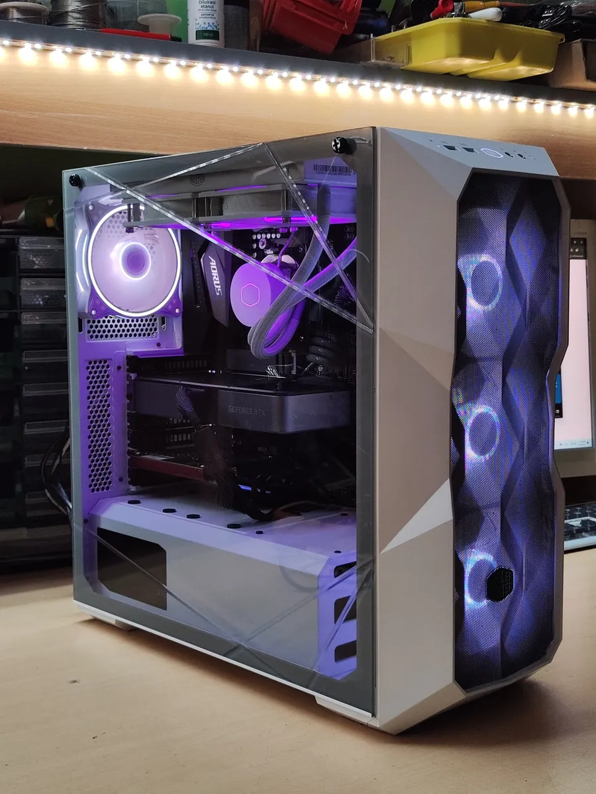
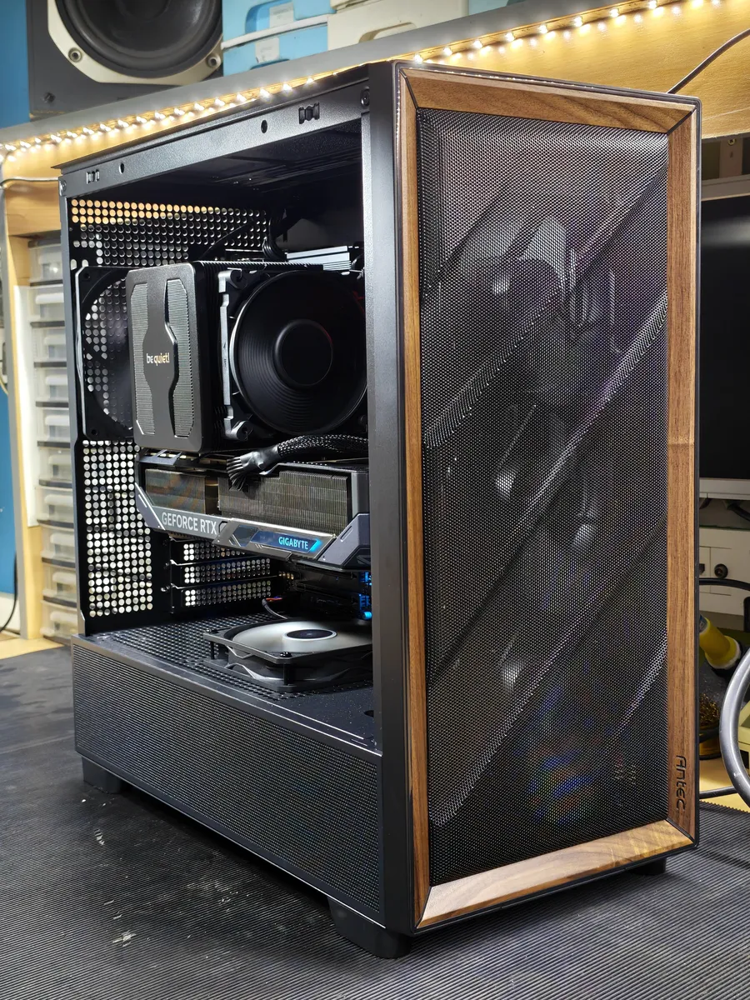
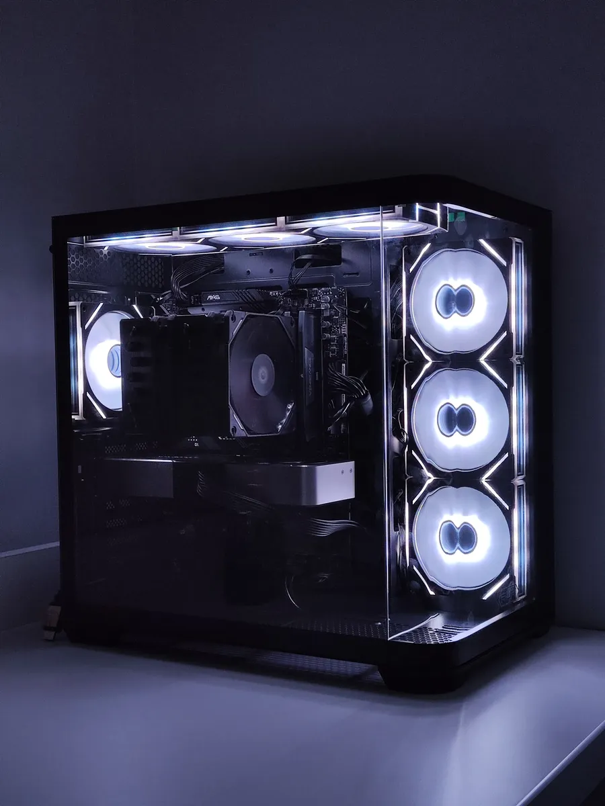
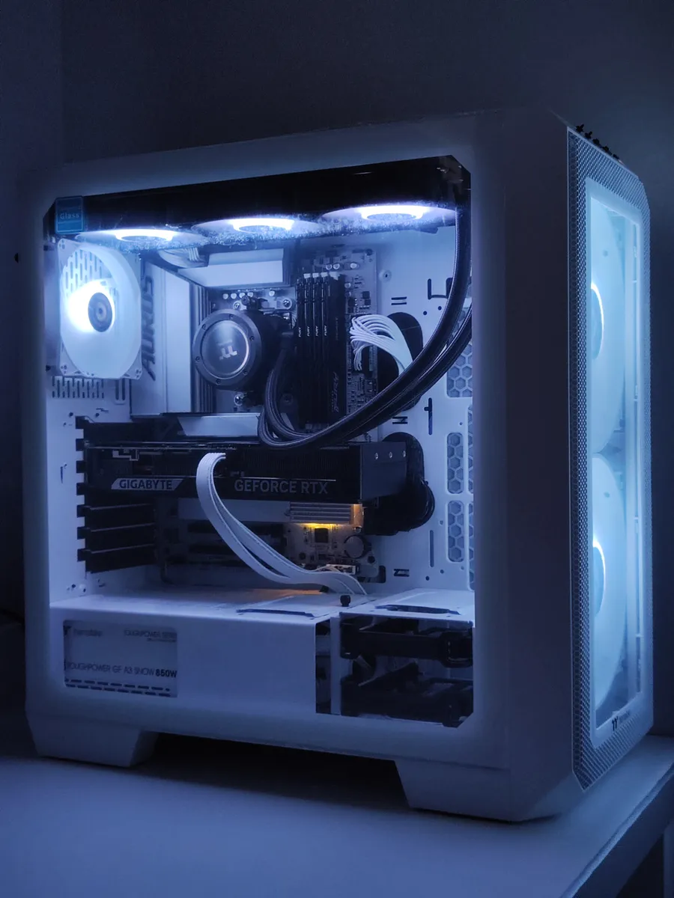

Premium Servis
Ovaj servis je dizajniran za korisnike koji žele maksimalne performanse, stabilnost i dugovečnost svog računara. Bez obzira da li je vaš sistem pregrejan, usporen ili jednostavno zahteva redovno održavanje na najvišem nivou, naš proces garantuje vraćanje u salonsko stanje.
Dijagnostika
Detaljno testiranje svih komponenti pod opterećenjem kako bismo utvrdili trenutno stanje temperatura, stabilnost i potencijalno usko grlo sistema.

Reorganizacija
Potpuno rasklapanje računara i profesionalni cable management za neometan protok vazduha i besprekoran estetski izgled unutrašnjosti.

Čišćenje
Dubinsko kompresorsko izduvavanje prašine, čišćenje kontakata i zamena stare termalne paste premium kvalitetnom Kryonaut pastom.

Instalacija
Sklapanje sistema u celinu, ažuriranje BIOS-a na najnoviju verziju i instalacija aktuelnih drajvera za maksimalnu hardversku kompatibilnost.

Optimizacija
Fino podešavanje operativnog sistema, kreiranje custom fan profila za tiši rad i finalni stress test od 24h za potvrdu apsolutne stabilnosti.



Naš premium servis predstavlja vrhunac pažnje i posvećenosti vašem računaru. Svaki detalj prolazi kroz rigorozne provere, od dubinskog čišćenja do napredne optimizacije sistema i ugradnje najkvalitetnijih komponenti. Osetite razliku pre i posle.
Rezultati
-20°C
Niže temperature
100%
Optimizacija
Čisto
Detaljno čišćenje
Tested
Detaljno testiranje
Sklapanje Računara
Svaki računar je priča za sebe. Bez obzira da li planirate budget gaming mašinu, ozbiljnu radnu stanicu ili ultimativni 4K sistem, naš proces garantuje maksimalnu posvećenost, transparentnost i vrhunske performanse. Sve počinje preciznim planiranjem.
Sklapanje po budžetu
Detaljna analiza vaših potreba i kreiranje optimalne konfiguracije uz maksimalno poštovanje budžeta. Mogućnost sklapanja od potpuno novih, proverenih polovnih, ili kombinacije komponenti.
Dogovor (Rok / Cena)
Precizno definisanje svih detalja unapred. Utvrđujemo finalnu cenu bez ikakvih skrivenih troškova i tačan rok isporuke računara na vašu adresu.
B2B Nabavka
Sigurna i brza nabavka svih dogovorenih komponenti preko naših proverenih B2B dobavljača po najpovoljnijim uslovima na tržištu.
Rad
Fizičko sklapanje računara, umetnost cable management-a za idealan protok vazduha, instalacija softvera i višesatno stress testiranje pod maksimalnim opterećenjem.
Isporuka
Lično preuzimanje ili bezbedno slanje gotovog, podešenog i istestiranog računara u salonskom stanju, uz uredno spakovane ambalaže svih komponenti i garancije.
Sklapamo računare s ljubavlju.


Blackout Build: Stealth & Performance

RGB Workstation: Video Editing Beast

Budget King: 1080p Gaming Setup

Custom Watercooling: Extreme Overclock
Overclock Računari
Pored custom mašina po narudžbini, ponosno predstavljamo našu liniju već gotovih Overclock računara. Ovi sistemi su dizajnirani sa jasnim ciljem – da pruže maksimalne performanse za uloženi novac, spremni za rad i gaming čim ih izvadite iz kutije.
Naša vizija
Sklapamo računare od pažljivo odabranih delova. Svakodnevno ispitujemo tržište kako bismo napravili najpovoljnije konfiguracije za vaš novac, uz beskompromisno zadržavanje vrhunskog kvaliteta hardvera.
Naša izrada
Overclock računari pružaju apsolutno najbolji odnos cene i kvaliteta. Sistemi su stručno sklapani kombinovanjem novih i strogo proverenih polovnih delova, čime dobijate premium performanse po znatno nižoj ceni.
Prodaja
Svi naši gotovi računari su odmah dostupni za prodaju. Dobijate sistem koji je 100% optimizovan, sa instaliranim Windowsom, neophodnim drajverima i podešenim BIOS-om – na vama je samo da instalirate igrice.


OC Entry: 1080p Esport King

OC Mid-Range: 1440p Gaming

OC High-End: 4K & Streaming

OC Workstation: Render & Edit
Kupovinom Overclock računara ne dobijate samo kutiju sa delovima, već kompletan, izbalansiran ekosistem. Svaka mašina prolazi kroz višesatne stress testove kako bismo vam garantovali besprekornu stabilnost godinama unapred.
Overclock Standard
100%
Plug & Play
Best
FPS po dinaru
24h
Stress testirano
Sigurno
Podrška nakon kupovine
Pojačavanje Računara
Vaš računar je počeo da usporava i gubi korak sa novim programima? Nema potrebe za kupovinom novog! Pametnim unapređenjem ključnih komponenti vraćamo vašem sistemu fabričku brzinu i drastično mu produžavamo radni vek.
Dijagnostika
Radimo detaljnu dijagnostiku sistema, utvrđujemo trenutna uska grla (bottlenecks), šta tačno može da se unapredi i kolika je isplativost same nadogradnje.
Preporuka
Dajemo stručne savete i predloge specifičnih komponenti kako biste dobili apsolutno najveći skok u performansama za vaš uložen novac.
B2B nabavka
Preko naših proverenih partnera možemo da nabavimo svaki deo pojedinačno i po najpovoljnijim uslovima. Nismo ograničeni isključivo na rad sa celim računarima.
Izrada
Sve radove izvodimo strogo po dogovoru. Bilo da se radi o zameni i ažuriranju samo jedne komponente ili potpunom osvežavanju celog računara, proces je brz i transparentan.


Svaki upgrade radimo sa jasnim ciljem – prelazak na bržu NVMe SSD memoriju ili proširenje kapaciteta RAM-a često može udahnuti potpuno nov život mašini za delić cene novog računara.
Potencijal Nadogradnje
+100%
Brže očitavanje (SSD)
32GB+
Dual-Channel RAM
Max
Gaming FPS Boost
0%
Sistemski Bottleneck
Čišćenje Prašine
Prašina je tihi ubica svakog računara. Ona guši protok vazduha, podiže temperature komponenti i direktno utiče na pad performansi (Thermal Throttling). Naš profesionalni tretman oslobađa vaš sistem viška toplote i vraća mu dugovečnost.
Rasklapanje
Stručno i pažljivo skidanje svih panela, vađenje komponenti i kulera kako bi se osigurao pristup svakom, pa i najnedostupnijem uglu kućišta.

Detaljno čišćenje kompresorom
Korišćenjem profesionalnog kompresora za vazduh izduvavamo svu taloženu prašinu pod pritiskom, bez oštećenja finih elektronskih kontakata na ploči i karticama.

Zamena termalne paste
Pažljivo uklanjanje stare, stvrdnute paste sa procesora i grafičke karte, te nanošenje nove premium termalne paste (Kryonaut / MX-4) za savršen prenos toplote.

Vraćanje nazad
Precizno montiranje svih komponenti nazad u kućište, provera kontakata i finalni test paljenja kako bismo se uverili da sistem radi tiho, glatko i hladno.


Garantujemo drastičan pad radnih temperatura i tiši rad sistema. Preporučujemo kompletan proces detaljnog čišćenja i zamene paste na svakih 12 do 18 meseci za maksimalnu stabilnost.
Rezultat Tretmana
-20°C
Prosečan pad temp.
100%
Oslobođen protok
Silent
Tiši rad kulera
0%
Rizika od kratkog spoja
Instalacija Sistema
Svež i optimizovan operativni sistem je temelj svakog brzog računara. Nudimo kompletnu instalaciju najnovijih sistema uz sav neophodan prateći softver. Od osnovnih alata za svakodnevni rad, do najzahtevnijih profesionalnih programa – vaš računar dobijate apsolutno spreman za akciju.
Instaliranje OS (Windows 11)
Instalacija čistog i optimizovanog operativnog sistema, bez nepotrebnog bloatware smeća koje bespotrebno usporava rad procesora i puni memoriju.
Instaliranje Drajvera
Preuzimanje i instalacija najnovijih zvaničnih drajvera za matičnu ploču, grafičku kartu i ostale periferije radi maksimalne hardverske kompatibilnosti.
Aktivacija operativnog sistema
Trajna i bezbedna aktivacija operativnog sistema, uz podešavanje osnovnih sigurnosnih parametara i optimizaciju Windows Defendera.
Instaliranje osnovnih programa za rad
Podešavanje okruženja za svakodnevno korišćenje koje uključuje web pretraživače (Chrome/Brave), media playere (VLC), PDF čitače i WinRAR/7-Zip ekstraktore.
Instaliranje zahtevnih programa (Opciono)
Po vašem zahtevu, instaliramo i podešavamo teške profesionalne industrijske pakete kao što su Adobe kolekcija, Microsoft Office, AutoCAD, SketchUp i mnogi drugi.
Podržani Softver

Microsoft Office
Osnovni paket (Word, Excel, PowerPoint) za kancelarijsku produktivnost i obradu teksta.

AutoCAD
Vodeći industrijski standard za napredno 2D i 3D tehničko crtanje i projektovanje.

ArchiCAD
Moćan BIM softver specijalizovan isključivo za detaljno arhitektonsko projektovanje.

Tower
Profesionalni softver usko namenski za statičku analizu i dimenzionisanje konstrukcija.

SketchUp
Omiljeni alat dizajnera za brzo, veoma precizno i intuitivno 3D modelovanje objekata.

V-Ray
Najpoznatiji render engine za prebacivanje 3D modela u fotorealistične prikaze.

MasterCAM
Vodeći CAD/CAM softver za pripremu i profesionalno CNC mašinsko programiranje.

Lightroom
Najbolji alat za masovnu organizaciju, profesionalnu kolor korekciju i obradu fotografija.

Premiere Pro
Apsolutni lider za naprednu nelinearnu video montažu, sečenje i video produkciju.

Photoshop
Nezamenljiv alat za detaljnu obradu piksela, retuširanje slika i digitalni dizajn.
... i mnogi drugi programi po vašoj želji.
Izrada Web Stranica
Vaše online prisustvo je vaša lična karta. U svetu gde se prvi utisak stiče u milisekundi, dizajniramo munjevito brze, optimizovane i vizuelno impresivne web stranice. Od jednostavnih prezentacija do kompleksnih web aplikacija – gradimo sisteme koji rade za vas.
Ideja
Sve počinje razgovorom. Vaš zadatak je da nam predstavite svoju zamisao, viziju brenda i ciljnu grupu, a mi ćemo to pretočiti u stabilan digitalni koncept.
Implementacija
Koristimo najmodernije programske jezike i napredne AI alate za brzu i besprekornu izradu koda, osiguravajući maksimalnu preciznost bez gubljenja vremena.
Materijal i fontovi
Prikupljamo vaš materijal – tekstove, slike, logotipe i specifične fontove. Ukoliko tek počinjete, mi obezbeđujemo premium tipografiju i stock materijale za vas.
Domen i hosting
Nudimo fleksibilna rešenja u zavisnosti od potreba: od klasičnog plaćenog hostinga (Loopia) do besplatnih, a ultra-brzih i pouzdanih servera (Vercel) za moderne web aplikacije.
SEO Optimizacija
Vaš sajt neće biti samo lep, već i vidljiv. Pišemo čist kod i implementiramo osnovnu SEO optimizaciju kako bi vas klijenti i pretraživači (Google) lako pronašli.
Buduća nadogradnja
Sajtove pravimo modularno. Uvek ostavljamo čist prostor u kodu za lako dodavanje novih stranica, blogova ili web prodavnica kada vaš biznis poraste.
Održavanje
Niste prepušteni sami sebi nakon izrade. Uvodimo opciju mesečnog održavanja sistema, redovnog kreiranja bekapova i izmena sadržaja kada se zahtevi ukažu.
Zahtevnost projekta
Detaljno analiziramo tehničku kompleksnost vaše ideje – utvrđujemo da li je u pitanju jednostavan portfolio, korporativni sajt ili napredna web aplikacija sa bazama podataka.
Rok izrade
Na osnovu zahtevnosti zadajemo realan i transparentan rok isporuke. Ostavljamo razuman prostor za testiranje i eventualne revizije kako bi finalni proizvod bio savršen.
Cena izrade
Kada definišemo sve parametre iznad, formiramo fer i konačnu cenu izrade projekta. Nema skrivenih troškova i neprijatnih iznenađenja na kraju posla.


Budućnost digitalnog identiteta.
Prepoznajući potrebu za vrhunskim aplikacijama i web sajtovima, uvodimo poseban sektor – Overclock Web. Naš specijalizovani tim fokusiran je isključivo na web development, izradu naprednih web aplikacija i poslovne automatizacije.
SAZNAJ VIŠEDizajniranje Flajera

Od ideje do realizacije. Kreiramo moderne i upečatljive reklamne materijale, flajere i vizit karte koji ostavljaju snažan utisak na prvi pogled i efikasno komuniciraju vaše usluge.
300dpi
Print Ready format
CMYK
Kalibracija boja
24h
Isporuka idejnog rešenja
Premium
Vizuelni identitet